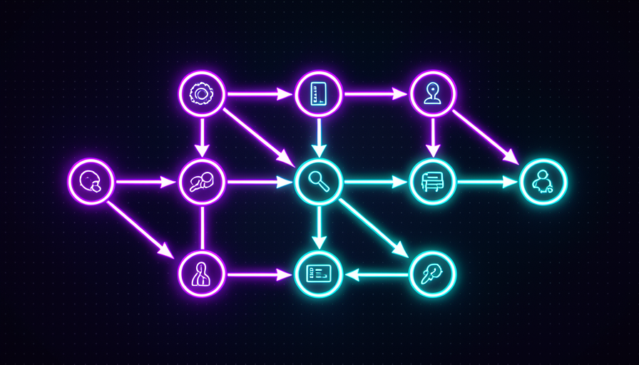

💡 ¿Eres nuevo aquí? Tres palabras antes de empezar
- Workflow — una secuencia de pasos automáticos: hace A, luego B y después C, sin que tengas que pasar de uno a otro.
- Subagente — una IA especializada en una sola cosa (investigar, revisar, escribir) a la que tu agente principal recurre cuando la necesita.
- Plantilla — un modelo listo. Lo copias, cambias lo que es tuyo y lo usas. No lo armas desde cero.
🔄 Qué es un workflow: pasos encadenados
Una skill es una pide: hace bien una sola cosa. Un workflow es la receta: encadena varias piezas en un orden, y el resultado de un paso se convierte en la entrada del siguiente. En vez de que copies el resultado de un lugar a otro, el flujo lo hace por sí solo.
Piensa en pedir comida por una app: tocas una vez y, entre bastidores, ocurre una serie de pasos: se confirma el pago, se avisa a la cocina, se llama al repartidor y te envían el estado. No tienes que encargarte de cada etapa. Un workflow de IA es la misma idea, pero para el trabajo: buscar → verificar → resumir, o idea → texto → imagen, encadenados.
🔑 La idea central
La diferencia entre una tarea e un trabajo:
- •Skill (una tarea): "resume este texto" → llega el resumen. Fin.
- •Workflow (un trabajo): "investiga el tema, verifica las fuentes y entrégame un informe" → varios pasos, un resultado final.
Conceptos clave
🧩 Plantillas listas para subagentes
Un subagente es una IA con un solo papel. En vez de pedirle todo a una IA genérica, armas un pequeño equipo: uno que solo investigación, uno que solo revisa, uno que solo escribe. Cada uno hace mejor su parte porque tiene una instrucción precisa y clara.
La buena noticia: no tienes que inventar esos roles. Existen plantillas listas — descripciones estándar de «qué es este agente, qué hace y qué no hace». Copias la plantilla, ajustas uno que otro detalle y ya tienes al miembro del equipo.
✓ Una buena plantilla de subagente
- ✓Tiene un solo papel (investigador, revisor...)
- ✓Indica qué hacer y qué no hacer
- ✓Define cómo entregar el resultado
- ✓Es corto: cabe en un párrafo
✗ Una plantilla mala
- ✗"Haz todo" — papel sin enfoque
- ✗Sin límites: no sabe qué evitar
- ✗No indica cuál es la entrega esperada
- ✗Gigante y confuso
💡 Consejo práctico
Empieza con dos o tres subagentes, no diez. Un investigador, un redactor y un revisor ya cubren la mayoría de los trabajos. Más agentes = más cosas que pueden salir mal. Amplía el equipo solo cuando lo necesites.
Conceptos clave
🔬 Un workflow de investigación listo
El flujo de investigación es el «huevo de Colón» de los workflows: tres pasos sencillos que, juntos, te ahorran horas. Buscar las fuentes, revisar si son confiables y coinciden entre sí, y resumir en un informe con las fuentes anotadas. Cada paso tiene un trabajo claro.
El paso intermedio —revisar— es lo que separa la investigación del rumor. Ahí es donde el flujo descarta lo que no tiene fuente y marca lo que está en duda. Sin él, solo tienes un resumen atractivo de algo que puede estar mal.
🧪 Workflow listo para copiar (investigación en 3 pasos)
Objetivo: pasar de un tema vago a un informe breve y con fuentes, sin leer diez pestañas a mano. Pega en Claude o en ChatGPT, reemplazando lo que está entre < >.
Você é meu agente de pesquisa. Faça este workflow em 3 passos, me mostrando o resultado de cada passo antes de seguir: TEMA: <o que você quer pesquisar, ex: melhores planos de celular pré-pago> PASSO 1 — BUSCAR: liste de 4 a 6 fontes recentes sobre o tema, com o título e o link de cada uma. PASSO 2 — CONFERIR: para cada fonte, diga se é confiável e se concorda com as outras. Descarte as duvidosas e me avise quais. PASSO 3 — RESUMIR: escreva um relatório de 1 página com: - 3 a 5 conclusões principais (cada uma com a fonte ao lado), - 1 ponto em que as fontes discordam, - o que ainda ficou em aberto.
Cómo verificar que funcionó: el informe final debe tener fuentes junto a cada conclusión y mencionar al menos un desacuerdo. Si recibes un texto fluido sin fuentes, se omitió el paso 2: pide que lo rehaga verificando la información.
💡 Consejo práctico
Pídele que te muestre el resultado de cada paso antes del siguiente. Así lo detectas a tiempo: si las fuentes del paso 1 ya son malas, resumir no sirve. Verificar a mitad del proceso cuesta menos que descubrir el error al final.
Conceptos clave
🎨 Un workflow de contenido listo
Crear contenido desde cero cansa. Un workflow lo transforma en una línea de producción: idea → guion → texto → imagen. Cada etapa entrega algo concreto que la siguiente utiliza: el guion guía el texto y el texto sugiere la imagen. Tú das la idea y revisas en los puntos de intercambio.
La imagen de abajo es el plano de esta línea. Fíjate en que no es magia: es la misma lógica de encadenamiento del tema 1, aplicada a un trabajo creativo. El valor está en no empezar desde cero con cada publicación.

🏭 Las 4 etapas de la línea
- 1.Idea: tú (o un agente) defines el tema y el público.
- 2.Guion: la IA arma la estructura: título, temas, llamado a la acción.
- 3.Texto: escribe el contenido siguiendo el guion.
- 4.Imagen: sugiere/genera el arte que combina con el texto.
Revisas entre las etapas. ¿Aprobaste el guion? Sigue con el texto. ¿No te gustó? Ajústalo antes de invertir el resto.
Conceptos clave
🪡 Adaptar una plantilla a tu flujo de trabajo
La plantilla es el esqueleto; tú pones la carne. Adaptar es cambiar tres cosas: las herramientas (dónde busca, dónde guarda), los pasos (quita lo que no te sirve, agrega lo que falta) y la entrega (el formato que quieres al final). No hace falta reescribir el flujo: solo ajustar estas piezas.
Regla de oro: cambia una cosa a la vez y prueba. Si cambias todo de una vez y algo se rompe, no sabrás qué cambio tuvo la culpa. Los pequeños ajustes, de uno en uno, mantienen el control en tus manos.
🔧 Cambia las herramientas
Donde la plantilla dice «busca en la web», apunta a tu drive, tu hoja de cálculo, tu correo electrónico.
➕ Ajusta los pasos
Quita un paso que no te sirve, agrega uno que falta (p. ej., «traduce al español»).
📦 Define la entrega
Indica el formato final: correo electrónico, publicación, hoja de cálculo, audio. El mismo flujo, un resultado diferente.
🧪 Prueba un cambio a la vez
¿Cambió? Ejecútalo. ¿Funcionó? Sigue con el siguiente. ¿Falló? Sabes exactamente qué pasó.
Conceptos clave
🔒 Encadenar con seguridad
Cuanto más largo sea el flujo, más lugares habrá para que un pequeño error se convierta en una bola de nieve. La solución es sencilla: puntos de control entre los pasos. Antes de una acción que afecta el mundo real —enviar un correo electrónico, borrar un archivo, gastar dinero—, el flujo se detiene y te pide el OK.
La regla práctica: pasos que solo leen o redactan borradores pueden ejecutarse solos; pasos que cambian algo de verdad piden confirmación. Así el workflow sigue siendo rápido, pero no ocurre nada irreversible sin que lo veas.
✓ Puede ejecutarse solo
- ✓Buscar y leer información
- ✓Redactar un texto (sin enviarlo)
- ✓Resumir, organizar, comparar
- ✓Generar una sugerencia para que la revises
✗ Pide tu confirmación
- ✗Enviar un correo electrónico o un mensaje
- ✗Borrar o sobrescribir archivos
- ✗Gastar dinero / hacer compras
- ✗Publicar algo para el público
🎯 El hábito que salva
Cada vez que crees un workflow nuevo, pregúntate: "¿qué paso aquí es irreversible?". Este es el paso que añade un punto de revisión. El resto puede avanzar sin supervisión.
Conceptos clave
✋ Antes de seguir — ¿qué diferencia un workflow de una skill aislada?
🎓 Resumen del módulo
Siguiente módulo:
3.5 — ⚡ Automatización y disparadores: cómo hacer que tu Jarvis actúe solo, en el momento indicado, sin que se lo pidas.